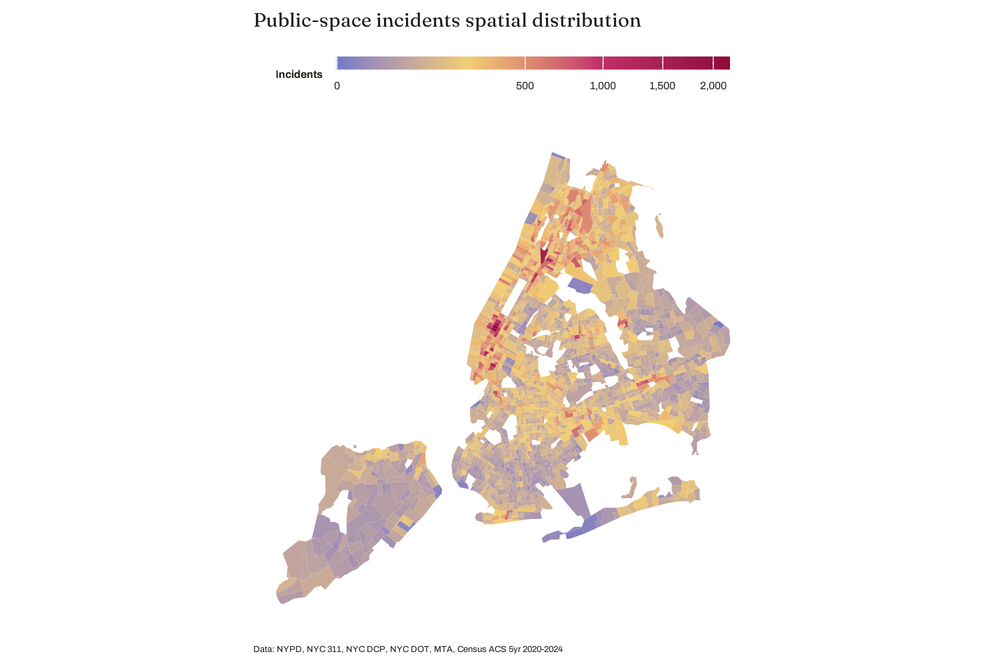
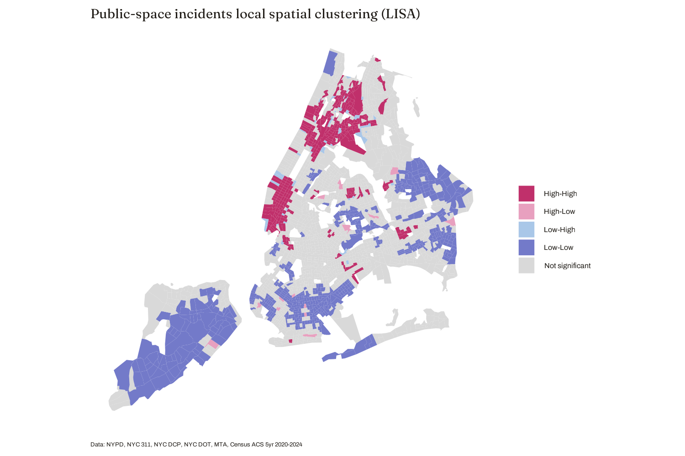

02 · Where it happens
One connected corridor, from the South Bronx to Midtown
Incidents cluster hard
Public-space incidents concentrate in Midtown Manhattan and extend into Harlem and the South Bronx, with secondary clusters in Downtown Brooklyn, Jamaica Center, Flushing's Main Street, and Coney Island's commercial strip.
Global Moran's I = 0.510, p < 0.001
368 hot spots, 502 cold spots
Getis-Ord Gi* separates the city into statistically hot and cold terrain. Hot spots trace Manhattan's commercial spine; cold spots sit in Staten Island, southern Brooklyn, and eastern Queens.
Getis-Ord Gi*, tract level
The clusters are connected, not scattered
Local Moran statistics show the High-High group as a single connected region running down Manhattan's commercial areas. The Low-Low group is low-density, car-oriented, and far from the subway. The few outliers are isolated nodes in quiet surroundings.
LISA, pseudo p < 0.0001 for core clusters

Fig. 2 — Public-space incidents by census tract, 2021–2025.">

Fig. 5 — LISA clusters: one connected High-High corridor.">